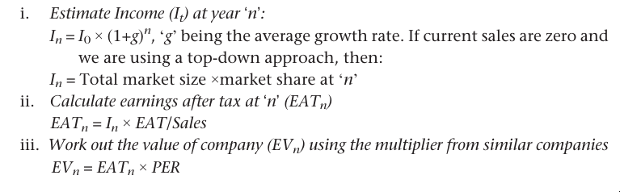
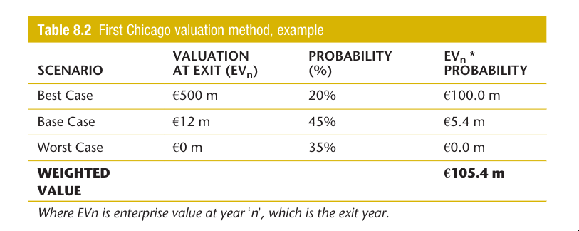
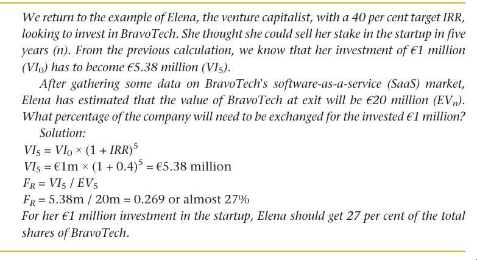
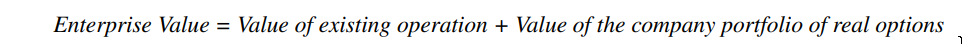
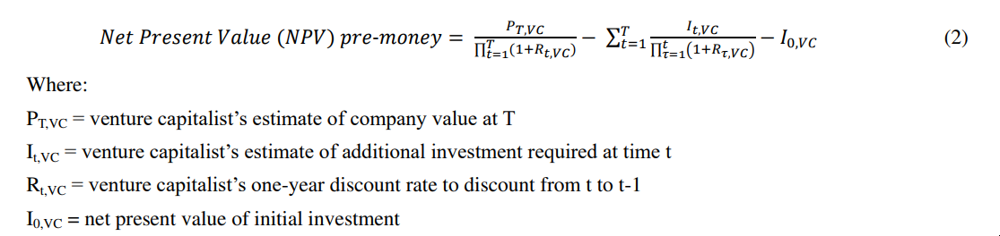
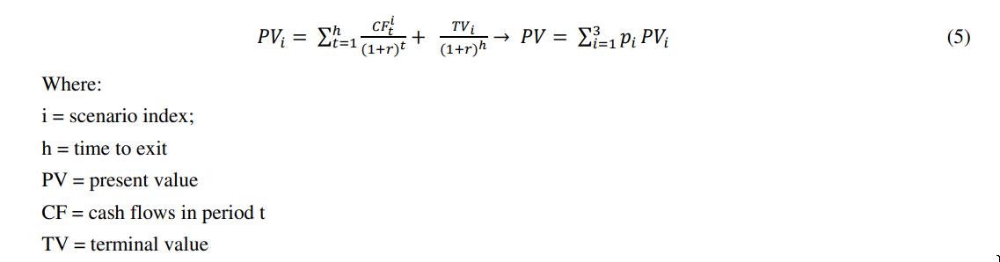

- startups are rarely financed by debt, the equity investor is typically the first person to be interested in valuing the venture
Valuing method for startups
- venture capital method
- its expected future value when the investor comes to sell his stake
- the percentage of ownership that the investor will request in exchange for his money
- he number of shares and price per share the deal will be done at
- he pre-money and post-money valuation of the startup
Traditional valuing methods
- first step is to analyse the current situation, from both a financial performance and a balance sheet point of view
- second growth potential of the company is taken into account, as well as the development of the market(s) the company is operating in
- Finally, the degree of uncertainty of that future potential, measured by the risk of the business, is entered into the equation
Net asset value
- total debts, both accounts payable and all other liabilities, are then subtracted from the total market value of the assets to get to the equity value
- This valuation method is generally not recommended when dealing with companies where most of the value lies in their growth potential, as is the case with many startups
Discounted cash flow (DCF)
- estimate all its future free cash flows and then calculate their present value by discounting them using an appropriate measure for the cost of capital of the company.
- valuation is determined by two key elements: the future annual free cash flows and the cost of capital
- you need
- past performance of the company, ideally over five years
- evolution and dynamics of the market in which the company is operating
- future investment plans
- Why you cannot use that for startup
- First, it could be that there is no history, so we cannot rely on the past to forecast the future.
- Second, in many cases there is no market, as it is being created by the startup / the market is so immature that it is impossible to predict its evolution and future dynamics
- investment plans will rely heavily on the evolution of the market, the reaction of competitors or of those being affected by the disruption
- the cost of capital, also known as WACC (weighted average cost of capital), 3 is a combination of the cost of both elements of the financial structure of the firm: its equity and its debt. For new ventures, it is not possible to estimate the cost of equity (K e) as we might do for established firms. In general, the cost of equity is calculated using the CAPM model
Dividend-based valuation
- interest payments are subtracted from the FCF. And to discount the cash flows to the present instead of using the cost of capital (WACC), we apply the cost of the equity
- can only be used in mature companies that are already paying out dividends. This is a distant future for a new startup
Multiple-based valuation
- Similar companies
- how many times a company is worth its sales (EV/Sales or Enterprise Value/Sales) or its EBITDA,
- how much are the number of subscribers
- how much the number of square metres for a retail business
- how much the number of downloads for an app
- Similar transactions
- sales
IRR (internal rate of return)
If an investment may be given by the sequence of cash flows
Year (n ) ) | Cash flow (Cn ) ) |
|---|---|
| 0 | -123400 |
| 1 | 36200 |
| 2 | 54800 |
| 3 | 48100 |
| In this case, the answer is 5.96% (in the calculation, that is, r = .0596). |
- Ignores the initial investment worth (net present value) and just looks at the generated cashflows and their return
New ways to value startups
- Venture capitalists have used different techniques to get a ‘feel’ of where the value of a startup might be. These investors are more concerned with the size of the company in the future, assuming that all goes well. ‘Are we looking at a €10 million business in three years, or is this more a €100 million or even €500 million company?’
- venture capitalists raise funds from different sources, such as the financial sector, corporations, government funds, university endowments or wealthy individuals
- capital providers in the fund are referred to as Limited Partners or
LPs - fund managers, or General Partners (GPs), contractually agree to a certain type of investments with their LPs
- capital providers in the fund are referred to as Limited Partners or
- Agreements between LPs and GPs:
- Maximum/minimum amount of money invested per (portfolio) company
- Activity/sector: the fund can be more generalist, like an investor in ‘technology’, or more specific, for example, an investor in ‘apps’ or ‘mobile apps’.
- Geography: a city, a region, a country or continent
- Stage of the company: pre-prototype; with prototype; first customers (maybe given free access to test the prototype); sales over a certain amount (for example, €1 million); market position; expanding internationally, or pre-IPO
- Target stake in the venture (percentage that they will consider, for example, 20 per cent to 30 per cent).
- Type of deal: seed; series A, B, C, or late stage.
- For example, the strategy of venture capital fund ABC could be ‘investments in software companies in the south of Europe, with a proven prototype and a first beta tester, looking to raise between €2 and €4 million, for a 20 to 35 per cent share in the company’. That means that ABC can only invest in companies that meet these characteristics. Even if the partners of the ABC fund find an interesting opportunity that they would love to invest in, if it is outside the defined scope, they are not allowed to do so
- Time horizon: venture capital investment should be returned within a specific (relatively short) period (QUESTION: What % return do LPs want?) Having an ‘exit strategy’ is always a must. **(QUESTION: Isn’t the exit strategy always the same, trying to rase further?)) **
- In general, equity investors in startups expect a return in the range of 40 to 60 per cent for early-stage deals and more technology-based companies, and a lower range, of between 30 and 40 per cent, in later-stage and less disruptive companies.
- IRR calculation
- Example:



Income/Sales
- Bottom-up approach: Understand the selling process and start building from zero. For example, in an internet B2C business, key variables would be: investment in online ads, number of click-throughs, number of potential customers, number of buyers, average shopping basket, repeat customers, and so on. Basically, it is about following the sales funnel. For a B2B the focus could be on the number of sales people in the company, calls per day, visits per week, successful visits, time to close a sale, average sale per customer, and so on
- Top-down approach: Alternately, if we know the size of the market, we could try to estimate the market share that the company will own in year ‘n’. Investors prefer to treat this approach as complementary as a reality check. For example, a business angel might ask one of the founders, ‘according to the figures that you are presenting today, what would your market share be by year 5?’ With this question, the investor is trying to understand whether the numbers make sense. Of course, if your venture is a ‘copycat’, or it is an innovation within a well-established market, then this approach alone might be appropriate
The Real Option Method

- Flexibility in Decision-Making: Treats investments as options, not obligations.
- Types: Expansion, abandonment, delay, and switching options.
- Valuation: Uses models like Black-Scholes or binomial trees.
- Application: Useful in capital intensive, uncertain environments like tech, natural resources, and pharmaceuticals.
- Benefit: Captures value from managerial flexibility.
- Challenge: Complexity in modeling and forecasting.
The Venture Capital Method

The First Chicago Method

Modified DCF
- Top Down
- Bottom Up